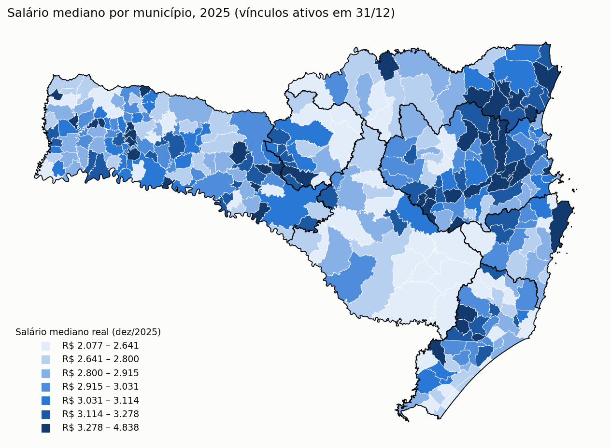
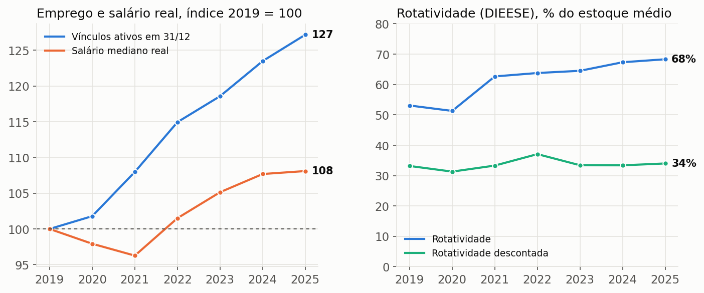

Mercado de trabalho formal em Santa Catarina
Como evoluíram emprego, rotatividade e salários em SC entre 2019 e 2025, e onde estão as disparidades?
- +27% de empregos formais em seis anos, e +8% de salário mediano real, que só superou o nível de 2019 em 2022.
- A rotatividade subiu de 53% para 68%, mas a descontada ficou estável em ~34%: os pedidos de demissão foram de 30% para 42% dos desligamentos. É um mercado aquecido.
- Mulheres recebem 83% a 87% da mediana dos homens em todas as regiões. Na região de Florianópolis, pretos e pardos recebem 70% da mediana dos brancos.
Na revisãoTroquei extrações parciais em CSV pela RAIS completa no BigQuery e mantive o star schema no grão do vínculo, porque mediana não se recompõe de agregado. Um teste pegou a mudança de codificação da fonte em 2023.
BigQuerydbtSQLStar schemaPython27 testes

